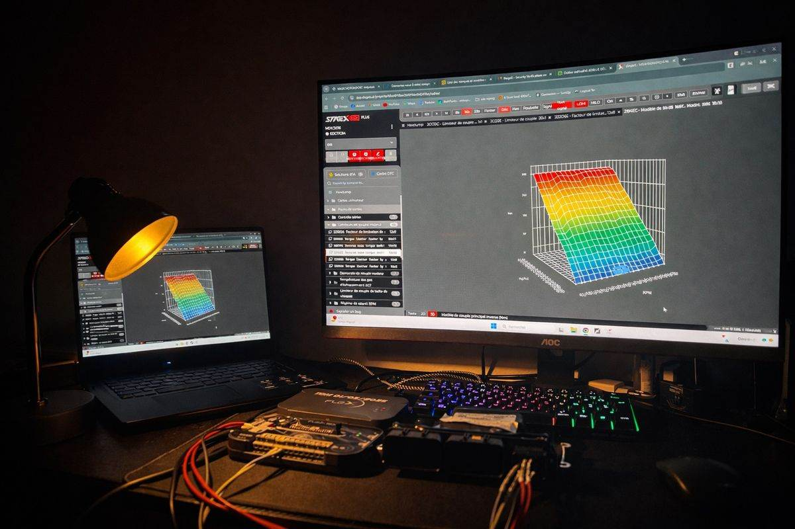
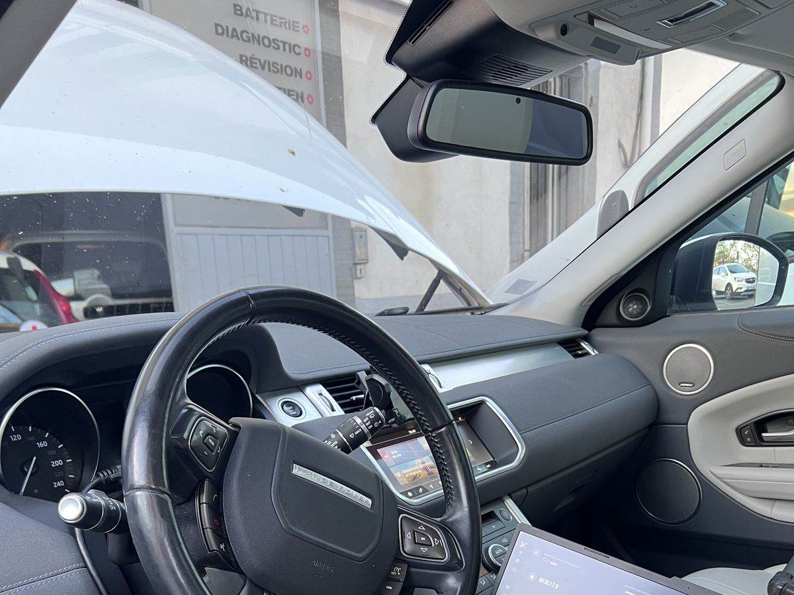
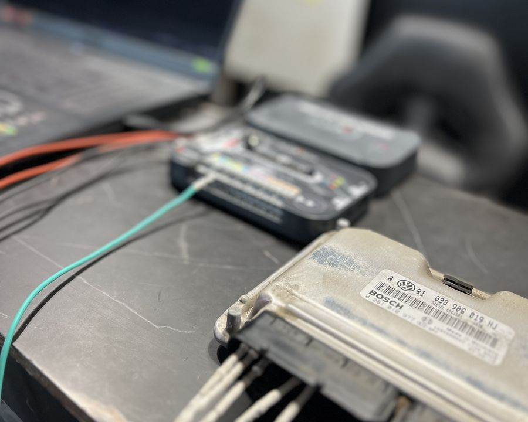
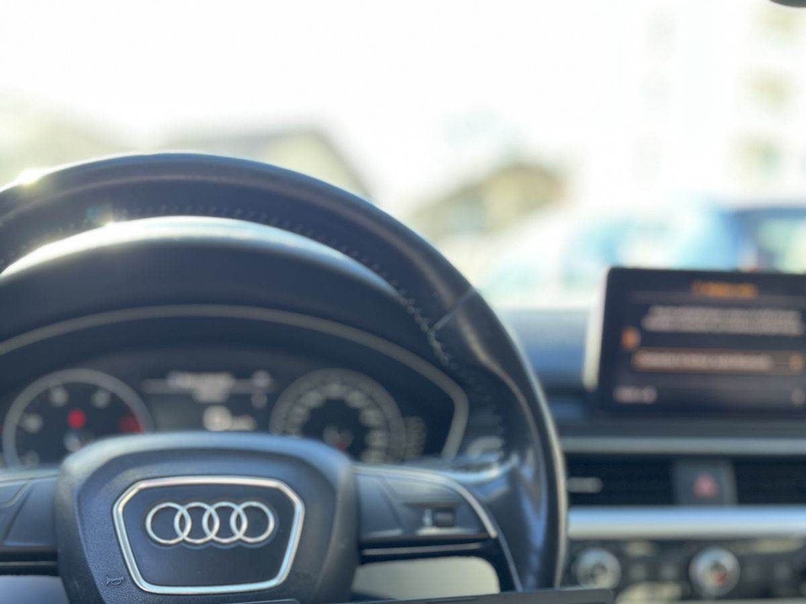

Reprogrammation moteur à domicile — Stage 1, E85, EGR/FAP/AdBlue, diagnostic ODIS VAG officiel. On vient chez vous avec tout le matériel. Devis gratuit sous 24h.
Fini les frais de remorquage, les journées sans voiture et les ateliers qui font monter la facture. AREPROG intervient directement chez vous avec un matériel professionnel identique à celui des préparateurs officiels.

Envoyez marque, modèle et motorisation. Réponse sous 24h avec tarif fixe, sans surprise.
On convient d'un créneau à votre adresse — domicile, bureau ou parking. Flexible selon votre planning.
Diagnostic, flashage, validation sur route. On ne repart pas tant que les gains ne sont pas confirmés.

Puissance, couple, consommation — vous ressentez la différence immédiatement. Garantie 2 ans incluse.
De la reprogrammation pure aux désactivations techniques — chaque prestation est réalisée avec le bon matériel, sur votre motorisation spécifique.
Optimisation de la cartographie moteur sans modification mécanique. Gains immédiats en puissance et couple sur tous les turbos.
Reprogrammation avancée combinée aux modifications mécaniques. Pour les passionnés qui veulent repousser les limites.
Roulez au bioéthanol sans boîtier externe. Conversion native ECU pour une gestion optimale de tous les mélanges.
Suppression logicielle ciblée : EGR pour protéger l'admission, FAP pour prévenir les pannes, AdBlue pour éviter les blocages.
Cartographie orientée rendement thermique. Idéal pour les grands rouleurs qui veulent moins dépenser à la pompe.
Outil officiel Volkswagen Group. Accès complet à tous les calculateurs VW, Audi, Seat, Skoda — à votre domicile.

Intervention nickel à domicile sur mon Golf 7 GTI. La différence est énorme, la voiture tire beaucoup mieux sur toute la plage de régimes. Technicien très pro et pédagogue.
Conversion E85 sur mon 308 GTi, le bilan est excellent. Je fais le plein pour moitié moins cher et je n'ai perdu aucune performance. ROI atteint en 8 mois.
Mon Audi A4 avait un voyant FAP allumé en permanence. Désactivation FAP + EGR faite en 1h30 sur mon parking. Plus aucun problème depuis 6 mois.

On se déplace avec tout le matériel directement à votre adresse. Pas de remorquage, pas d'attente en atelier.
Devis gratuit sous 24h. On se déplace, vous n'avez rien à faire.
Le sans-plomb vient de franchir le seuil des 2€/L avec la hausse continue des marchés.
La reprogrammation éthanol AREPROG vous permet de rouler à l'E85 — 61% moins cher.